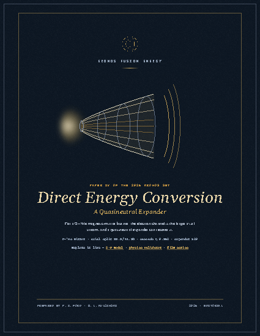

Abstract
Shows that the conventional framing of advanced-fuel direct energy conversion describes the birth spectrum, not the axial loss channel: at reactor temperatures the recoverable stream is a directed electron flow that no published converter recovers. Proposes a quasineutral two-species expander — the ambipolar magnetic nozzle run backward — with a pre-registered bench program to test it.
@techreport{Ford2026_directenergyconversion,
author = {P. I. Ford and G. L. Kulcinski},
title = {Direct Energy Conversion for a D–³He Magnetic-Mirror Burner: The Electron Channel is the Larger Axial Stream},
institution = {Kronos Fusion Energy},
year = {2026},
doi = {10.5281/zenodo.21842864},
url = {https://doi.org/10.5281/zenodo.21842864}
}Open Access, CC BY 4.0 — cite the archival deposit by DOI.
This paper is Open Access (CC BY 4.0). Every headline number regenerates from the named script and archived data in the deposit above; requirement-class assumptions and open risks are stated in the manuscript rather than absorbed into a single optimum. No financial or commercial information appears in this work.